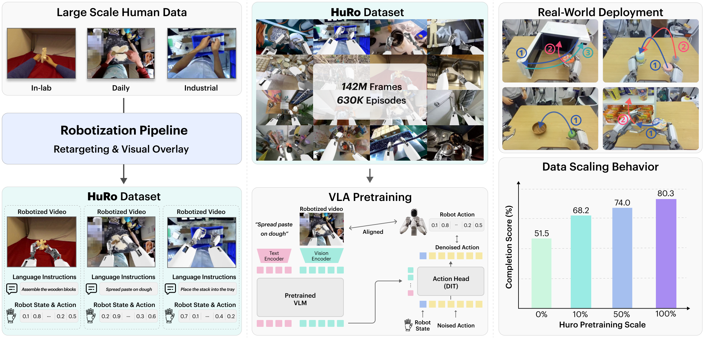
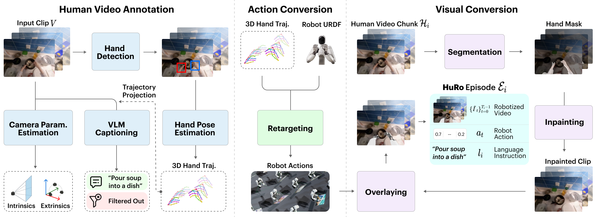
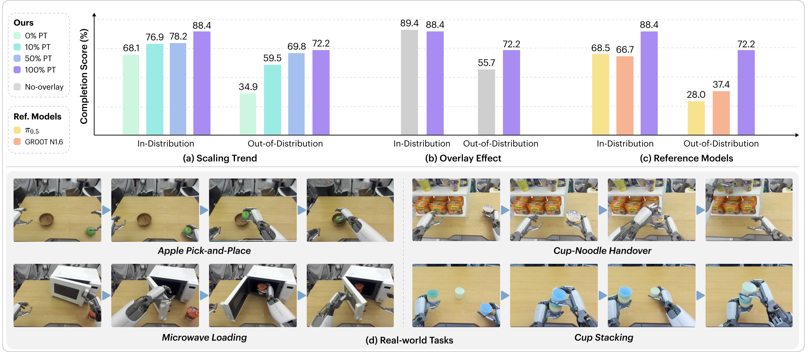
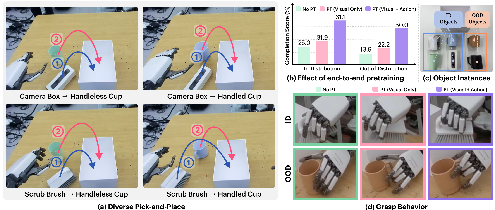
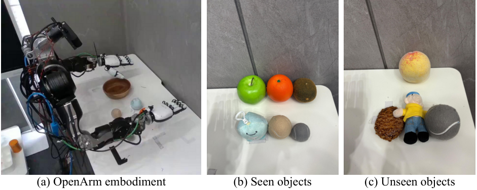
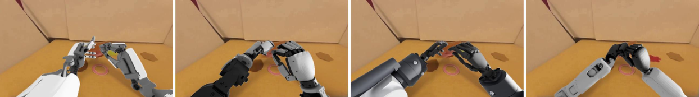

Can human videos converted into robot-aligned observations and actions serve as a scalable source for VLA pretraining? We build a robotization pipeline that turns heterogeneous egocentric human videos into robot-aligned observations and retargeted actions, and use it to construct the HuRo dataset: 630K robotized episodes and 142M frames. Scaling this data improves real-world performance under both in-distribution and out-of-distribution conditions, with the largest gains in the out-of-distribution setting.

Overview. Large-scale human videos are transformed into VLA episodes with robotized observations, language instructions, robot states, and actions. VLA policies pretrained on larger HuRo subsets achieve higher real-world manipulation performance after downstream finetuning.
Frame share: EgoDex 55%, EgoVerse 27%, Ego4D 10%, Ego10K 6%, EPIC-Kitchens 2%.
HuRo scales jointly robot-aligned observation-action data from diverse human videos for end-to-end VLA pretraining.
The visible human is removed, a rendered ALLEX humanoid is overlaid, and human hand motion is retargeted into robot actions. Egocentric human videos become robot-aligned observations paired with actions and language.
Robotized observations across diverse scenes from five egocentric human-video sources.
Three stages convert an egocentric human video into a robotized episode, estimating any intermediate signals a source is missing so that heterogeneous videos map into one robot format.

Off-the-shelf models fill in missing camera geometry and 3D hand poses, split the video into manipulation chunks, and caption each chunk with a VLM.
The annotated hand motion is retargeted to a robot joint trajectory, yielding robot states and actions.
The visible human is segmented and inpainted away, then a robot rendered in simulation is overlaid onto the cleaned scene.
We instantiate HuRo with ALLEX (a bimanual dexterous humanoid) and pretrain a VLA policy, then finetune on a small set of real-robot demonstrations.
Apple Pick-and-Place, Cup Stacking, Cup-Noodle Handover, and Microwave Loading, evaluated across in-distribution (ID) and out-of-distribution (OOD) conditions with spatial and visual shifts.

Downstream completion rises consistently with pretraining scale under both ID and OOD. At full scale, HuRo pretraining also outperforms the π0.5 and GR00T N1.6 reference models under both ID and OOD.
With the same source clips and the same retargeted action supervision, a 10% overlay subset outperforms the 100% no-overlay variant on OOD (59.5% vs. 55.7%).
Beyond the four main tasks, Diverse Pick-and-Place requires sequentially grasping two objects that demand different grasp types and placing them into a basket. It is tested under object and spatial shifts.
Pretraining observations and retargeted actions end-to-end substantially outperforms PT (Visual Only), which keeps the pretrained visual pathway but reinitializes the action head. PT (Visual + Action) reaches 61.1% ID / 50.0% OOD and produces demonstration-consistent grasps where No PT and PT (Visual Only) grasp imprecisely.

See the paper for detailed evaluation settings and further analysis.
HuRo with only 0.7M frames already outperforms a DreamGen-based image-to-video + inverse-dynamics baseline (I2V + IDM) at 7.0M frames.
The gap widens with the pretraining budget, especially under out-of-distribution evaluation, where the baseline shows no further gain from 3.5M to 7.0M frames while HuRo continues to improve.
Variants differ only in how human motion becomes robot targets: end-effector (EEF, wrist pose) targets from fixed camera-to-robot extrinsics vs. HuRo's camera-motion-aware conversion, with or without hand (finger) targets. Camera-aware conversion improves both ID and OOD, and hand targets add further gains.
| Robotization variant | ID | OOD |
|---|---|---|
| No PT | 63.9 | 25.0 |
| Fixed-EEF (fixed extrinsics) | 75.0 | 50.0 |
| Fixed-EEF + Hand | 80.6 | 61.1 |
| HuRo-EEF + Hand (ours) | 86.1 | 63.9 |
Completion (%).
Pretraining on robotized observations and robot actions outperforms pretraining on the same clips with human observations and human-hand actions under OOD conditions on both tasks.
| Method | PT obs. / action | Cup Stacking | Cup-Noodle Handover |
|---|---|---|---|
| No PT | none | 31.9 | 16.7 |
| Human-HRDT | Human / Human | 5.6 | 37.5 |
| Human-VITRA | Human / Human | 0.0 | 9.7 |
| Ours (100% PT) | Robotized / Robot | 70.8 | 66.7 |
OOD completion (%) in a separate environment with an unseen background. Human-domain variants use the same clips and pretraining scale as ours.
A mixed-source 50% subset uses fewer frames than the full EgoDex-only subset yet covers far more verbs, objects, and verb-object pairs. On the four ALLEX tasks, it reaches higher ID and OOD completion.
| Pretraining data | Frames | ID | OOD |
|---|---|---|---|
| EgoDex-only | 78.9M | 63.9 | 54.2 |
| Mixed 50% | 71.1M | 78.2 | 69.8 |
Downstream completion (%), four ALLEX tasks.
| Variant | Visual cov. | Verbs | Objects | Verb-object |
|---|---|---|---|---|
| Mixed 10% | 0.664 | 521 | 1,300 | 11,787 |
| Mixed 50% | 0.678 | 778 | 1,980 | 25,656 |
| Mixed 100% | 0.687 | 959 | 2,344 | 35,358 |
| EgoDex-only | 0.616 | 136 | 268 | 938 |
Visual coverage against 20K OpenImages references, and unique instruction terms.
ALLEX-targeted HuRo pretraining transfers to OpenArm Fruit Pick-and-Place, with the best OOD and overall completion among the compared variants.

| Variant | ID avg. | OOD avg. | Overall |
|---|---|---|---|
| No PT | 54.2 | 43.8 | 49.0 |
| Human-HRDT | 75.0 | 56.3 | 65.6 |
| Human-VITRA | 33.3 | 12.5 | 22.9 |
| Ours (visual-only) | 62.5 | 25.0 | 43.8 |
| Ours (no-overlay) | 62.5 | 62.5 | 62.5 |
| Ours (HuRo PT) | 70.8 | 75.0 | 72.9 |
Completion (%). OOD uses an unseen target fruit with seen and unseen distractors.
The same human-video annotations robotize to four embodiments, and jointly pretraining on ALLEX + OpenArm robotizations improves both ID and OOD over ALLEX-only.

| Pretraining data | ID | OOD |
|---|---|---|
| ALLEX-only | 86.1 | 63.9 |
| ALLEX + OpenArm (joint) | 91.7 | 77.8 |
Completion (%). Annotations and inpainting are shared across embodiments, and adding a new embodiment costs roughly 10% or less of the profiled pipeline.
Across the two sources, the full pipeline runs at roughly 8 to 10× the clip duration on a single RTX 5090, and once manipulation segments are selected, 97 to 98% of their frames reach the final dataset.
| Pipeline stage | EPIC-Kitchens | Ego4D |
|---|---|---|
| Human video annotation | 89.8 min | 77.9 min |
| Action conversion | 6.0 min | 3.6 min |
| Visual conversion | 47.3 min | 38.6 min |
| Total | 143.1 min (9.5×) | 120.1 min (8.0×) |
Processing time per 15-minute clip, single RTX 5090.
| Retention | EPIC-Kitchens | Ego4D |
|---|---|---|
| Source video | 96.2 h | 1,589.1 h |
| Manipulation selection | 17.3% | 6.9% |
| Post-selection retention | 98.1% | 97.0% |
Manipulation selection is the fraction of source video kept as manipulation segments, lower for Ego4D with its less sustained hand-object interaction. Across all five sources, 3,298.6 h of input yields 142.2M final frames (1,316.8 h).
Reconstruction, retargeting, kinematic validity, and visual conversion, measured on EgoDex annotations and on generated HuRo data.
| Component | Diagnostic | Result |
|---|---|---|
| Camera trajectory | Per-frame rotation error vs. EgoDex | 0.218° median |
| SE(3)-aligned position ATE vs. EgoDex | 4.47 mm median | |
| Hand pose | Root-relative 21-keypoint error vs. EgoDex | 20.4 mm median |
| Retargeting | Fingertip residual after IK | 21.2 mm median |
| Joint limits | No violation > 1° at any scored joint/frame | 62.5% of trajectories |
| Self-collision | No non-grasp self-contact in sampled frames | 55.2% of trajectories |
| Inpainting | Reconstruction under arm-shaped masks | 24.8 dB median |
| Human removal | Reduction in detected person pixels | 93.3% |
@misc{jeong2026huro,
title={HuRo: Robotizing Human Videos for Scalable VLA Pretraining},
author={Jinho Jeong and Se June Joo and Jaehyun Kang and Dongyun Kim and Yena Kim and Hanjung Kim and Seon Joo Kim},
year={2026},
eprint={2609.10706},
archivePrefix={arXiv},
primaryClass={cs.RO},
url={https://arxiv.org/abs/2609.10706},
}